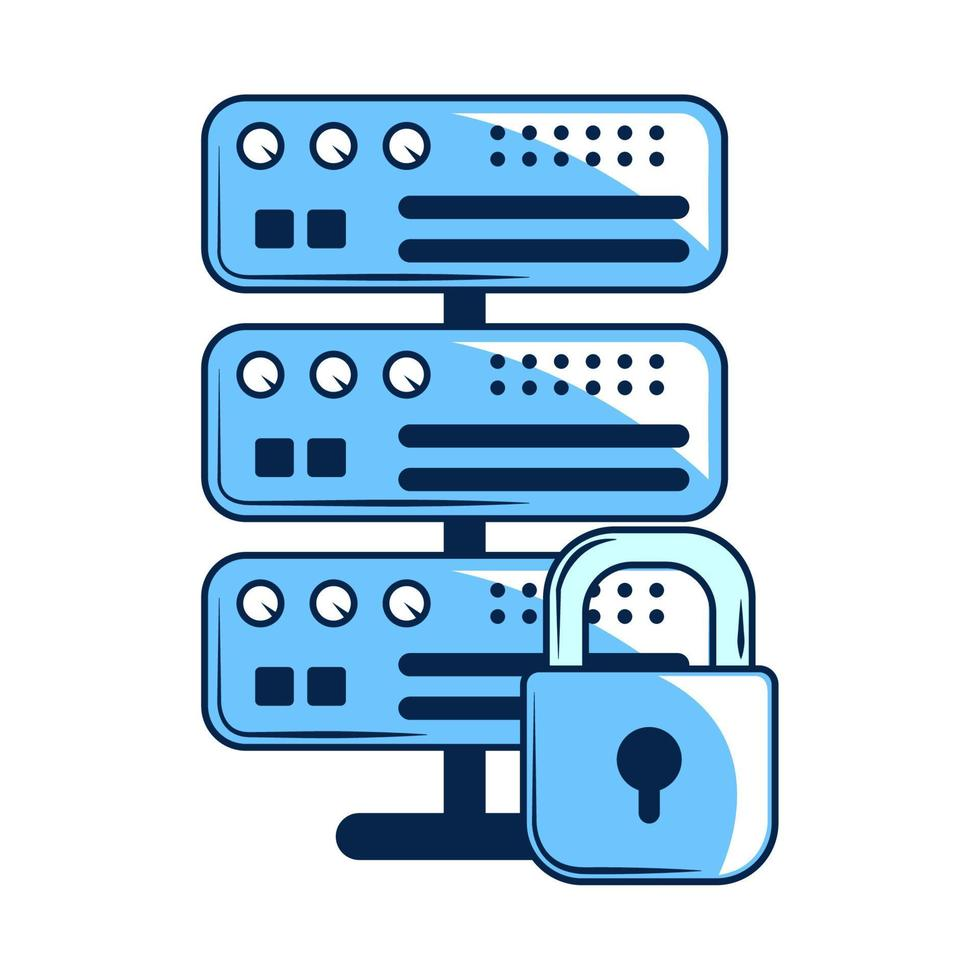
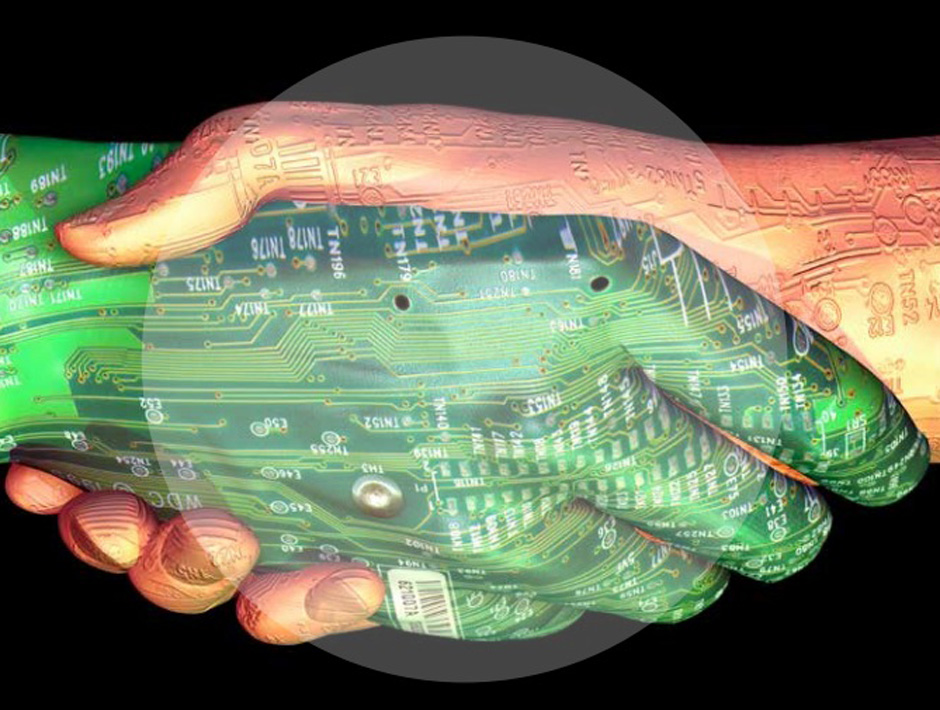
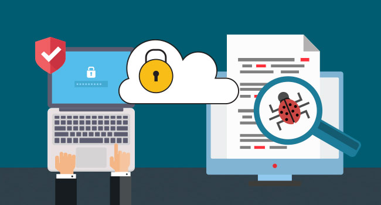
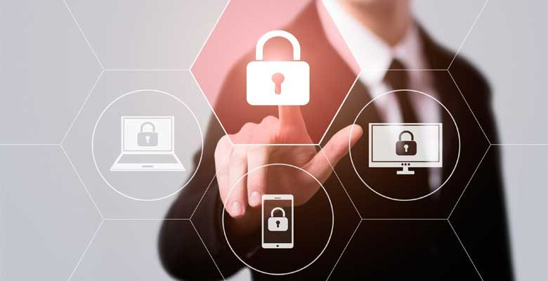

Origen de la Ciberseguridad
La ciberseguridad tiene su origen en la necesidad de proteger los sistemas informáticos y la información que manejan. Con la aparición de la informática y la conexión en red de los sistemas, surgió la necesidad de protegerlos ante posibles ataques y amenazas informáticas. A medida que la tecnología ha avanzado, los riesgos y las amenazas han aumentado, por lo que la ciberseguridad se ha convertido en una disciplina clave para proteger los sistemas y datos.

Bases de la Ciberseguridad
Las bases de la ciberseguridad se centran en la protección de los sistemas informáticos y la información que manejan. Entre las medidas de seguridad que se implementan se encuentran el cifrado de la información, la autenticación de usuarios y la detección de intrusos. Además, la ciberseguridad busca garantizar la privacidad y la confidencialidad de los usuarios.
Historia de la Ciberseguridad
La historia de la ciberseguridad se ha desarrollado en paralelo con la evolución de la tecnología informática. En sus inicios, la ciberseguridad se centraba en la protección de sistemas militares y gubernamentales, pero con el auge de internet, la ciberseguridad se ha extendido a empresas y usuarios individuales. A medida que los riesgos y amenazas han aumentado
Objetivo de la Ciberseguridad
El objetivo de la ciberseguridad es proteger los sistemas informáticos y la información que manejan, así como garantizar la privacidad y la confidencialidad de los usuarios. Para ello, se implementan medidas de seguridad como el cifrado de la información, la autenticación de usuarios y la detección de intrusos. Además, la ciberseguridad busca prevenir y mitigar los riesgos y las amenazas informáticas, así como asegurar la disponibilidad y la integridad de los sistemas y datos.
Tipos de Amenazas Informáticas
Las amenazas informáticas pueden ser internas o externas. Las amenazas internas son aquellas que provienen de personas que tienen acceso autorizado a los sistemas, como empleados o contratistas. Estas amenazas pueden ser accidentales o intencionales. Por otro lado, las amenazas externas provienen de personas ajenas a la organización y pueden ser de diversas formas, como ataques de hackers, malware, phishing, entre otros.
Medidas de Seguridad en la Ciberseguridad
Entre las medidas de seguridad que se implementan en la ciberseguridad se encuentran el cifrado de la información, la autenticación de usuarios, la detección de intrusos y el control de acceso. También se utilizan soluciones de software y hardware para proteger los sistemas, como firewalls, antivirus, sistemas de prevención de intrusiones, entre otros. Además, es importante contar con políticas y procedimientos de seguridad, y capacitar a los usuarios en buenas prácticas de seguridad.
La Importancia de la Ciberseguridad
La importancia de la ciberseguridad radica en la protección de los sistemas informáticos y la información que manejan, así como en la garantía de la privacidad y la confidencialidad de los usuarios. Los ataques informáticos pueden tener graves consecuencias, como la pérdida de información valiosa, la interrupción de los servicios, el robo de identidad y la exposición a riesgos financieros. Por ello, es fundamental contar con medidas de seguridad efectivas y estar al tanto de las últimas amenazas y tendencias en ciberseguridad.
Desafíos de la Ciberseguridad
Los desafíos de la ciberseguridad son muchos y cambiantes. Los cibercriminales están constantemente buscando nuevas formas de atacar los sistemas y las medidas de seguridad deben evolucionar al mismo ritmo para estar preparados ante nuevas amenazas. Además, la falta de conciencia y formación en seguridad informática por parte de los usuarios sigue siendo un desafío importante en la lucha contra los ataques informáticos.
Ciberseguridad en el Futuro
En el futuro, se espera que la ciberseguridad siga siendo un tema crítico y en constante evolución. Con la creciente conectividad y el uso de la tecnología en todos los aspectos de la vida, es fundamental contar con medidas de seguridad efectivas y avanzadas. Además, se espera que la inteligencia artificial y el aprendizaje automático jueguen un papel importante en la ciberseguridad, permitiendo una detección más rápida y eficiente de amenazas informáticas.
Conclusiones
En conclusión, la ciberseguridad es un tema crítico en la actualidad debido al creciente uso de la tecnología y la interconexión de los sistemas informáticos. La protección de la información y la privacidad de los usuarios es fundamental para evitar graves consecuencias. Es importante contar con medidas de seguridad efectivas y avanzadas, así como con políticas y procedimientos de seguridad. Además, la conciencia y formación en seguridad informática por parte de los usuarios es esencial para prevenir ataques informáticos. La ciberseguridad seguirá siendo un tema crítico en el futuro, y se espera que evolucione para adaptarse a las nuevas amenazas y tendencias en tecnología.